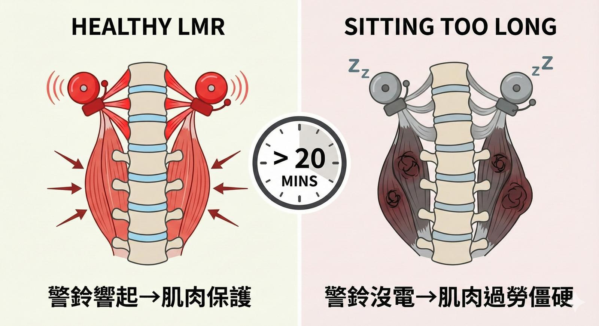

為什麼「坐著不動」也會腰受傷？揭開韌帶的秘密：LMR 反射
【 為什麼「坐著不動」也會腰受傷？揭開韌帶的秘密：LMR 反射 】
很多患者來到診間常問：「醫師，我明明沒有搬重物，也沒有跌倒，就只是坐在辦公室打電腦，為什麼腰會閃到？為什麼肩頸會緊到像石頭？」
相信不少人也都有這個疑惑，今天就來聊聊這個問題。
我們常以為受傷一定要有「大動作」或「外力撞擊」。但其實，現代人最大的隱形殺手，叫做 「不動」。
人體存在一個非常關鍵，卻常被忽視的神經生理機制—— 韌帶-肌肉反射 (Ligamento-Muscular Reflex, LMR)。
📌 韌帶不只是繩子，它是「防盜警鈴」
以前我們以為韌帶只是一條把骨頭綁在一起的繩子。但權威學者 Moshe Solomonow 的研究告訴我們：韌帶其實是充滿神經的「感覺器官」。
當你的脊椎或關節快要扭傷時，韌帶會像警鈴一樣發送訊號給大腦，大腦會立刻命令旁邊的肌肉用力收縮，把關節拉回來。這就是 LMR，人體內建的「動態穩定系統」。
📌 坐著不動 20 分鐘，你的警鈴就「沒電」了
問題來了。韌帶有一個物理特性叫做「潛變」(Creep)。
想像一條橡皮筋，如果你把它拉長固定住，過了 15-20 分鐘，它就會變得鬆鬆垮垮，回彈力變差。我們的韌帶也是一樣。
當你低頭滑手機、或是駝背坐著超過 20 分鐘：
脊椎韌帶開始被拉長、變鬆（潛變）。
韌帶裡的神經受器因為持續受壓，開始「去敏感化」(Desensitization)——也就是說，警鈴沒電了，它停止向大腦回報狀況。
大腦收不到訊號會驚慌，為了保護脊椎，它只好命令肌肉「全面繃緊」來代償。
👉 這就是為什麼你久坐後會覺得肌肉僵硬、痠痛！ 那不是單純的緊，那是你的肌肉因為韌帶罷工，被迫加班過勞引起的「保護性痙攣」。
📌 只做按摩是不夠的
很多朋友覺得緊就去按摩，按完當下很鬆，隔天又痛起來。為什麼？ 因為如果韌帶的「警鈴系統」沒有醒過來，肌肉還是會接到大腦的指令繼續繃緊。
在中西醫整合的治療思維裡，面對這種「姿勢性勞損」，我們不能只放鬆肌肉，更要「喚醒韌帶」：
✅ 精準治療： 我們會使用針灸深刺至夾脊穴（韌帶層），或是利用聚焦式震波針對韌帶附著點進行治療。這不只是修復組織，更是為了給神經系統一個強烈的「重置 (Reset)」訊號，把睡著的 LMR 叫醒。
✅ 主動訓練： 治療後，必須配合不穩定面的控制訓練，讓神經重新學習如何快速反應。
📌 醫師給你的三個建議
遵守「20分鐘法則」： 最好的椅子也救不了你的韌帶。每坐 20 分鐘，就要站起來動一動。讓韌帶解除張力，恢復神經敏感度。
不要過度靜態伸展： 如果你已經坐很久了，不要再一直拉筋（Static Stretching），這樣反而會讓韌帶更鬆。你該做的是「活動」(Mobility)，比如轉轉腰、聳聳肩。
核心不是練更硬，是練反應： 真正的穩定，是在快要受傷的那0.1秒，肌肉能瞬間反應。
中醫自古有言「久坐傷肉」，用現代科學來看，或許傷的是「韌帶-肌肉的神經迴路」。
覺得腰痠背痛總是好不了嗎？或許肌肉沒問題，是韌帶「睡著」了。
#中醫針傷 #徒手治療 #韌帶肌肉反射 #LMR #久坐 #下背痛 #Solomonow
📚 參考文獻 (References)：
Solomonow M. (2004). Ligaments: a source of work-related musculoskeletal disorders. Journal of Electromyography and Kinesiology, 14(1), 49-60.
Solomonow M. (2006). Sensory-motor control of ligaments and associated neuromuscular disorders. Journal of Electromyography and Kinesiology, 16(6), 549-567.
本文內容僅供健康衛教參考，個人的疼痛成因複雜，若有持續性的身體不適或劇烈疼痛，請務必尋求專業醫療人員評估與治療。
太初中醫診所 東門中醫
中醫師 黃彥鈞
